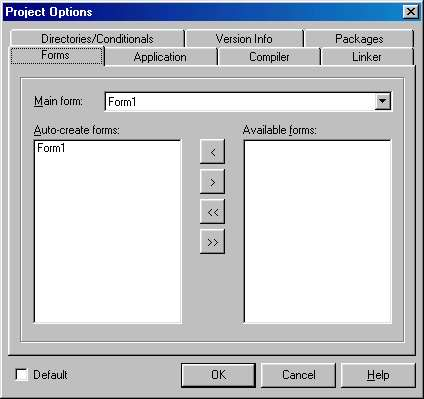
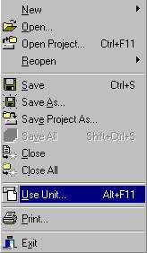
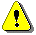
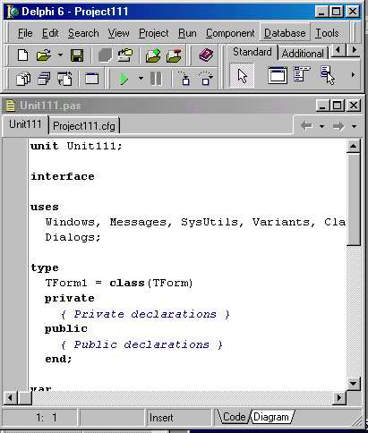
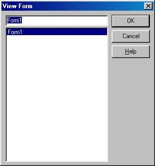

Разновидности форм
Разновидности форм определяются значениями их свойств FormStyle, а также разнообразием форм-заготовок, хранящихся в репозитории Delphi.
Стиль формы задается одним из значений свойства
TFormStyle = (fsNormal, fsMDIChild, fsMDIForm, fsStayOnTop) ;
property FormStyle: TFormStyle;
Стиль fsNormal определяет обычную форму, использующуюся для решения самых различных задач, в том числе - для общего управления всей программой (главная форма).
Стили fsMDIChild и fsMDIForm используются при создании так называемых многодокументных приложений в стиле MDI (MDI -Multi Document Interface). Этот немодный сегодня стиль предполагает создание главного окна MDI (его обычно называют рамочным), внутри которого по мере надобности появляются дочерние окна.' Дочерние окна, подобно дочерним элементам контейнера, не могут выходить за границы своего владельца - рамочного окна. В MDI-приложениях есть специальные средства управления взаимодействием рамочного окна с дочерними окнами. Например, каждое дочернее окно в момент активизации может нужным образом настроить главное меню рамочного окна (дочерние MDI-окна не имеют собственного главного меню). В Delphi для создания рамочного окна используется стиль fsMDIForm, а для создания дочернего MDI-окна - стиль fsMDIChild.
Стиль fsStayOnTop предназначен для окон, которые всегда должны располагаться над всеми другими окнами программы[ В терминологии Windows такие окна называются Popup Window, что буквально переводится как окно-поплавок. ]. В момент активизации окна оно обычно становится видимым на экране, даже если перед этим его загораживали другие раскрытые окна. Стиль fsStayOnTop препятствует перекрытию окна другими окнами, даже если оно становится неактивным и теряет фокус ввода (так сказано в документации, однако на самом деле это не так, см. ниже). Понятно, что этот стиль используется в исключительных случаях, когда окно содержит что-то, требующее повышенного внимания пользователя.
Как показывает практика, объявление окна со стилевым признаком fsStayOnTop еще не решает проблему создания окна-поплавка, т. е. окна, которое невозможно перекрыть другими окнами. Более того, несложные эксперименты убедят вас, что этот признак вообще не играет никакой роли! Чтобы создать окно-поплавок, нужно обратиться к API-функции SetWindowPos.
Например:
SetWindowPos(fmAlarmForm.Handle, hwnd_TopMost, 300, 300, 250, 70, swp_noActvate)
Полное описание этой функции (как и всех других API-функций Windows) вы найдете в Help-файлах WIN32.HLP или WIN32SDK.HLP, которые поставляются вместе с Delphi и по умолчанию располагаются В папке Program Files | Common Files | Borland shared | MSHelp. Здесь я лишь кратко поясню назначение параметров вызова.
Первым параметром обращения к функции является дескриптор окна, которое должно стать “поплавком”. Напомню, что дескриптор формы содержится в ее свойстве Handle, поэтому для формы fmAlarmForm параметр вызова имеет вид fmAlarmForm. Handle. вторым параметром определяется расположение окна относительно других окон в так называемом Z-порядке их расположения. Константа nwnd_TopMost указывает, что окно должно стать самым верхним и впредь до его закрытия не может перекрываться другими (обычными) окнами. Четыре следующие параметра определяют координаты левого верхнего угла окна, его ширину и высоту. Все параметры указываются в пикселях, координаты угла задаются относительно, левого верхнего угла экрана. Последним указывается один или несколько битовых флагов, уточняющих поведение окна. В нашем примере использован флаг swp_noActvate, означающий, что окно не получает фокуса ввода в момент своего появления на экране. Поясню, что на практике я часто использую окна-поплавки, чтобы сообщить пользователю, например, о необходимости обновить набор данных, которые он видит в настоящий момент, так как эти данные были изменены другими пользователями клиент-серверной БД. Такое окно не должно отнимать активность (фокус ввода) у окна, с которым работает пользователь.
И последнее замечание. “Поплавком” может стать и обычное окно (со значением FormStyle=fsNormai). Однако “поплавок” действительно появится на экране, только если в его свойстве visible содержится значение True.
Иными словами, если пользователь закроет такое окно, оно не появится в результате вызова функции setwindowpos - его предварительно нужно сделать видимым методом show. Поскольку окно-поплавок может вызываться в разных местах программы, удобно поместить вызов функции setwindowspos в его обработчик события onActivate. Однако если вы попытаетесь создать такой обработчик для окна со стилем FormStyle=fsStayonTop, то компилятор выдаст сообщение об ошибке и поместит заготовку метода в тексте модуля после ограничителя “.”. В этом случае определяйте окно со стилем fsNormal.
Современные многооконные приложения чаще всего строятся в стиле SDI (SDI - Single Document Interface), который в противоположность MDI не накладывает ограничений на положение и размеры вспомогательных форм, каждая из которых при необходимости может иметь свое главное меню (в стиле SDI реализована, например, среда Delphi). Для создания форм в этом случае используется стиль fsNormal.
Замечу, что в рамках SDI-приложений могут использоваться рамочные MDI-формы со своими дочерними окнами, так что термин SDI носит весьма условный характер и применяется в основном для противопоставления давно используемому термину MDI.
В репозитории Delphi хранится множество стандартных форм-заготовок, предназначенных для решения конкретных задач (доступ к репозиторию открывает опция меню File | New | other).
Помимо универсальной пустой формы Form (страница New peno-зитория) репозитории содержит следующие специализированные формы:
|
Название |
Страница |
Назначение |
|
About box |
Forms |
Окно 0 программе |
|
Dual list box |
Forms |
Диалоговое окно с двумя компонентами ListBox. Используется для гибкого управления списками, в том числе для перемещения элементов из одного списка в другой |
|
Quick Report Labels |
Forms |
Используется в приложениях баз данных для печати этикеток |
|
Quick Report List |
Forms |
Используется в приложениях баз данных для создания обычных отчетов |
|
Quick Report Master/Detail |
Forms |
Используется в приложениях баз данных для создания отчетов типа главный/детальный |
|
Tabbed Pages |
Forms |
Заготовка для многостраничного диалогового окна с закладками, кнопками ok, cancel и Help |
|
Dialog with Help |
Dialogs |
Заготовка для диалогового окна с кнопками ok. Cancel, Help. Имеются варианты с вертикальным асположением кнопок и с горизонтальным расположением |
|
Password Dialog |
Dialogs |
Диалоговое окно с редактором TEdit, кнопками ok и Cancel для ввода паролей |
|
Reconcile Error Dialog |
Dialogs |
Используется в приложениях баз данных для пояснения обнаруженной ошибки при изменении таблицы |
|
Standard Dialog |
Dialogs |
Заготовка для диалогового окна с кнопками ok, cancel. Имеются варианты с вертикальным расположение кнопок и с горизонтальным расположением |
|
Dialog Wizard |
Dialogs |
Мастер создания диалоговых окон |
|
Decision Cube Sample |
Business |
Заготовка для использование компонентов страницы Decision Cube |
|
Database Form Wizard |
Business |
Мастер создания форм для доступа к базам данных |
|
Quick Report Wizard |
Business |
Мастер создания отчетов для баз данных |
|
TeeChart Wizard |
Business |
Мастер форм для доступа к компоненту chart |
Компонент TFORM
Свойства формы:
|
property Active: Boolean-property ActiveControl: TWinControl; |
Содержит True, если окно активно (имеет фокус ввода) Определяет дочерний элемент, содержащий фокус ввода |
|
property ActiveMDIChild: TForm; |
Определяет дочернее midi oкнo с фокусом ввода |
|
TBorderIcon = (biSystemMenu, biMinimize, biMaximize, biHelp) ; TBorderIcons = set of TBorderIcon; property Borderlcons: TBorderIcons; |
Определяет наличие кнопок в заголовке окна: biSystemMenu - имеется кнопка вызова системного меню; biMinimize - имеется кнопка минимизации; biMaximize - имеется кнопка максимизации; biHelp - имеется кнопка вызова справочной службы |
|
property Canvas: TCanvas; |
Канва для прорисовки фона окна. Это свойство могут использовать не оконные дочерние элемента |
|
property ClientHeight: Integer; |
Высота клиентской части окна |
|
property ClientRect: TRect; |
Прямоугольник клиентской части окна |
|
property ClientWidth: Integer; |
Ширина клиентской части окна |
|
property HelpFile: Strings; |
Каждая форма может иметь индивидуальный Help- файл, имя которого содержит это свойство. Если имя не указано, используется Hdp-файп приложения |
|
property Icon: TIcon; |
Содержит пиктограмму окна. Для главной формы это свойство определяет также пиктограмму программы |
|
property KeyPreview: Boolean; |
Если имеет значение True, форма получает события от клавиатуры, перед тем как они поступят в элемент с фокусом ввода |
|
property MDIChildCount: Integer; |
В рамочном MDI-окне указывает количество связанных с ним дочерних midi-oкнo |
|
property MDIChildren[I: Integer]: Tforms; |
В рамочном MDI-окне открывает доступ к I-му дочернему окну |
|
property Menu: TMainMenu; |
Содержит главное меню окна |
|
TModalResuit = Low(Integer)..High(Integer) ; property ModalResult: TModalResuit; |
Для модального окна содержит результат диалога |
|
property PixelsPerInch: Integer; |
Определяет разрешающую способность окна в пикселях на один линейный дюйм для этапа конструирования формы |
|
TPosition = (poDesigned, poDe- fault, poDefaultPosOnly, poDe- faultSizeOnly, poScreenCenter) ; property Position: TPosition; |
Определяет положение и размеры окна в момент его появления на экране: poDesigned - такие же, как на этапе конструирования окна; poDefault - положение и размеры определяет Windows; poDefaultposOnly - положение, как на этапе конструирования, размеры определяет Windows; л poDefaultSizeOnly - размеры, как на этапе конструирования, положение определяет Windows; poScreenCenter - в центре экрана с размерами, как на этапе конструирования |
|
TPrintScale = (poNone, poProportional, poPrintToFit); property PrintScale: TPrintScale; |
Определяет масштабирование окна при его печати на принтере: poNone - нет масштабирования; каждый пиксель окна воспроизводится одной точкой на бумаге; рорrороrtional - форма масштабируется так, чтобы ее образ на бумаге был максимально похож на ее изображение на экране; poPrintToFit- форма печатается с такими же пропорциями, как на экране, но с размерами, за полняющими лист бумаги |
|
property Scaled: Boolean; |
Разрешает/запрещает масштабировать форму, если значение ее свойства PixelPerinch отличается от текущего разрешения экрана |
|
TileMode = (tbHorizonial, tbVertical); property TileMode: TTileMode; |
Определяет стиль расположения дочерних окон MDI-приложения при их упорядочении мозаикой |
|
property WindowMenu: TMenuItem; |
Определяет пункт главного меню рамочного MDI-окна, к которому добавляются опции дочернего окна |
|
TWindowState = (wsNormal, wsMinimized, wsMaximized) ; |
Определяет состояние окна в момент его появления на экране: wsNormal - бычное |
|
property WindowState: TWindow State; |
Окно; wsMinimized - минимизировано до пиктограммы; wsMaximized - распахнуто на весь экран |
Если в множестве свойства BоrderIcon убрать кнопки biMinimize: biMaximize, а в свойство WindowState поместить значение wsMaximized, форма займет все пространство экрана, включая нижнюю панель задач.
Методы формы:
|
procedure Arrangelcons; |
Упорядочивает пиктограммы закрытых дочерних окон MDI-приложения |
|
procedure Cascade; |
Располагает дочерние MDI-окна каскадом |
|
procedure Close; |
Закрывает окно. Для главного окна завершает работу программы |
|
function CloseQuery: Boolean |
Возвращает True, если можно закрыть окно |
|
procedure DefocusControl(Control: TWinControl; Removing: Boolean); |
Отбирает фокус ввода у дочернего элемента Control. Если при этом Removing=True, фокус ввода получает форма |
|
procedure FocusControl(Control: TWinControl); |
Передает фокус ввода дочернему элементу Control |
|
function GetFormImage: TBitmap; |
Содержит текущее изображение окна формы |
|
procedure Next; |
Делает активным следующее mdi-okнo |
|
procedure Previous; |
Делает активным предыдущее mdi-okнo |
|
procedure Tile; |
Располагает дочерние MDI-окна мозаикой |
|
procedure Print; |
Печатает окно на принтере |
|
procedure Release; |
Ожидает окончания обработки всех событий формы и ее дочерних элементов, после чего уничтожает окно и освобождает всю связанную с ним память |
|
procedure SendCancel- Mode(Sender: TControl); |
Восстанавливает начальное состояние окна: освобождает мышь, прекращает прокрутку и закрывает меню |
|
procedure SetFocus; |
Передает фокус ввода форме. Форма при этом должна быть активной и видимой |
|
procedure Show; |
Показывает форму в немодальном режиме |
|
function ShowModal: Integer; |
Показывает форму в модальном режиме и возвращает результат диалога |
События формы:
|
property OnActivate: TNoti fyEvent; |
Возникает в момент активизации окна (при полученииею фокуса ввода) |
|
TCloseAction = (caNone, caHide, caFree, caMinimize); TCloseEvent = procedure(Sender: TObject; var Action: TCloseAction) of object; property OnClose: TCloseEvent; |
Возникает перед закрытием окна. Параметр Action уточняет необходимые действия: саNоnе - не закрывать окно; caHide - спрятать окно; caFree - уничтожить окно; caMimimize - минимизировать окно |
|
TCloseQueryEvent = proce dure(Sender: TObject; var CanClose: Boolean) of object; property OnCloseQuery: TCloseQueryEvent; |
Возникает перед закрытием окна. В параметре canclose обработчик сообщает о возможности закрытия окна |
|
property OnCreate: TNotifyEvent; |
Возникает при создании окна, но до его появления на экране |
|
property OnDeactivate: TNoti fyEvent; |
Возникает при передаче активности другому окну той же программы |
|
property OnDestroy: TNotifyEvent; |
Возникает перед разрушением окна |
|
THelpEvent = function (Command: Word; Data: Longint; var CallHelp: Boolean): Boolean of object; property OnHelp: THelpEvent; |
Возникает при обращении к справочной службе. В параметре callHelp обработчик сообщает о возможности получения помощи |
|
property OnHide: TNotifyEvent; |
Возникает перед исчезновением окна |
|
property OnPaint: TNotifyEvent; |
Возникает при необходимости прорисовки окна |
|
property OnResize: TNotifyEvent; |
Возникает при изменении размеров окна |
|
property OnShow: TNotifyEvent; |
Возникает при появлении окна на экране |
Создание и использование форм
Для подключения новой формы к проекту достаточно обратиться к репозиторию и выбрать нужную разновидность формы. Менеджер проекта автоматически подключает новую форму к списку используемых форм и обеспечивает все необходимые действия по ее инициации. Самая первая подключенная к проекту форма (стандартное имя формы - Form1) становится главным окном программы. Окно этой формы автоматически появляется на экране в момент старта программы. Впрочем, программист может указать любую форму, окно которой станет главным. Для этого нужно обратиться к опции
Project | Options И, раскрыв список Main form, выбрать нужную
форму (рис. 19.1).

Pис 19.1. Окно управления проектом
Каждое следующее окно становится видно только после обращения к его методу show или showModal. Чтобы обратиться к этим методам, нужно сослаться на объект-окно, который автоматически объявляется в интерфейсном разделе связанного с окном модуля. Для этого, в свою очередь, главное окно должно знать о существовании другого окна, что достигается ссылкой на модуль окна в предложении uses. Если, например, в ходе выполнения одного из методов главного окна программист захочет вызвать окно с именем fmForm, связанное с модулем Formunit, он должен сослаться на этот модуль в предложении uses главного окна:
implementation Uses FormUnit;
после чего вызвать окно на экран:
fmForm.Show;
или
fmForm.ShowModai;
Delphi автоматизирует вставку ссылки на модуль в предложение uses. Для этого на этапе конструирования нужно активизировать главное окно, щелкнув по нему мышью, после чего обратиться к опции File | uses unit. В появившемся диалоговом окне (рис. 19.2) нужно выбрать модуль и нажать ок. Вставляется ссылка в предложение, стоящее за зарезервированным словом Implementation, т. к. обычно главное окно в своей интерфейсной части не ссылается на элементы интерфейсной части второго окна. Точно так же можно при необходимости сослаться в модуле второго окна на модуль главного окна: активизируйте второе окно и вновь вызовите опцию File | uses Unit. Замечу, что, если программист забыл сослаться на модуль, который подключен к проекту, Delphi при первой же трансляции программы сообщит об этом и предложит вставить недостающую ссылку.

Рис. 19.2 . Вставка ссылки на модуль
При вызове метода show второе окно появляется на экране и работает одновременно с первым, поэтому управление сразу передается оператору, стоящему за обращением к этому методу. Такие окна называются немодальными, они всегда открываются в одном методе, а закрываются в другом. В отличие от этого обращение к show-Modal создает модальное окно, которое полностью берет на себя дальнейшее управление программой, поэтому оператор за обращением к showModal в вызывающей части программы получит управление только после закрытия модального окна.
Модальные окна всегда требуют от пользователя принятия какого-либо решения. С их помощью реализуется диалог с пользователем или создается информационное окно, которое пользователь должен закрыть после ознакомления с содержащейся в нем информацией. Если от пользователя требуется принятие решения, в модальное окно вставляются зависимые или независимые переключатели, кнопки и другие интерфейсные элементы, с помощью которых пользователь сможет сообщить программе о принятом решении. В момент закрытия диалога модальное окно должно поместить число, соответствующее решению пользователя, в свое свойство ModalResuit. Некоторые стандартные кнопки (ok, Yes, No, cancel и т. п.) автоматически выполняют эти действия: помещают нужное число в ModalResuit и закрывают окно. В других случаях об этом должен позаботиться программист. Вызывающая программа получает значение ModaiResuit как значение функции showModal и может тут же его проанализировать:
if Form2.ShowModai = mrXXX then ....
Возможен и такой вариант:
Form2.ShowModal ;
if Form2.ModaiResuit = mrXXX then .....
Для закрытия окна (модального или немодального) используются методы Hide или close. Следует учесть, что метод Close всегда помещает в ModalResult значение 2 (mrCancel), в то время как Hide неt меняет значения этого свойства, поэтому, если программист хочет передать в вызывающую программу нестандартный модальный результат, следует писать:
ModaiResuit := MyResult;
Hide; // Но ни в коем случае Close!
 Подключение нового окна к проекту приводит к тому, что менеджер;
проекта размещает его имя в списке автоматически создаваемых окон на рис. 19.1 -список Auto-Create forms). В этом случае про-Дкшмист может не заботиться об инициации, соответствующего объекта окна. Однако если в программе используется множество окон, автоматическое их создание в момент старта программы может существенно затянуть во времени процесс загрузки программы; В то же Демя немедленное создание всех окон вовсе не обязательно, так как вряд ли вам понадобится одновременно показывать их на экране в немодальном режиме. Профессиональные программисты никогда не создают: все оконные объекты в момент старта программы, но используют их по мере надобности. Дчя .этого в окне менеджера проекта ссылки на эти формы переносятся в панель Available forms (рис. 19.1), а обращение к окну .
Мне известен случай, когда этот нехитрый прием позволил сократить время загрузки программы с З с лишним минут до 15 секунд.
Кстати, полезно соответствующим образом настроить среду Delphi:
вызовите Tools I Environment Options и на странице Designer уберите флажок в преключателе Autоcreate forms & data modules.
Программы с многими формами
Сложные программы подчас требуют создания множества форм, каждая из которых решает ту или иную конкретную задачу. Например, при создании систем управления базами данных типичным для проекта будет разработка от 50 до 100 и более форм. Процесс создания такого проекта обычно растягивается на несколько месяцев, а над его реализацией трудятся одновременно несколько программистов. Все это затрудняет ориентацию программиста, его способность быстро вспомнить назначение той или иной формы. В этом случае существенную помощь может оказать файл проекта. Как уже говорилось, рядом с описанием включенного в проекта модуля содержится строка комментария, в которой Delphi указывает имя файла формы. Этот комментарий появляется в диалоговом окне после щелчка по инструментальной кнопке выбора формы Я или выбора опции view | Forms главного меню. Если вы поместите в этом комментарии произвольный текст, он также будет виден в окне и поможет вам вспомнить назначение конкретной формы. На рис. 19.3 показана копия экрана с окном проекта, содержащего несколько десятков форм, а на рис. 19.4 - соответствующее диалоговое окно выбора форм.
Если вы захотите воспользоваться моим советом, учтите, что имя файла должно отделяться от вашего комментария только пробелами. Не пользуйтесь для разделения клавишей табуляции, так как в этом случае Delphi откажется включить комментарий в список форм проекта и вы просто не увидите его в диалоговом окне. (В умалчи-ваемой настройке Delphi нажатие клавиши табуляции имитируется вставкой нужного количества пробелов - опция Tools | Environment, закладка Editor, флажок use tab character не отмечен; после его отметки вместо пробелов вставляется символ табуляции #9, что и приводит к отказу Delphi включать форму в список.)

Рис. 19.3 Файл проекта с многими формами

Рис. 19.4. Диалоговое окно выбора формы